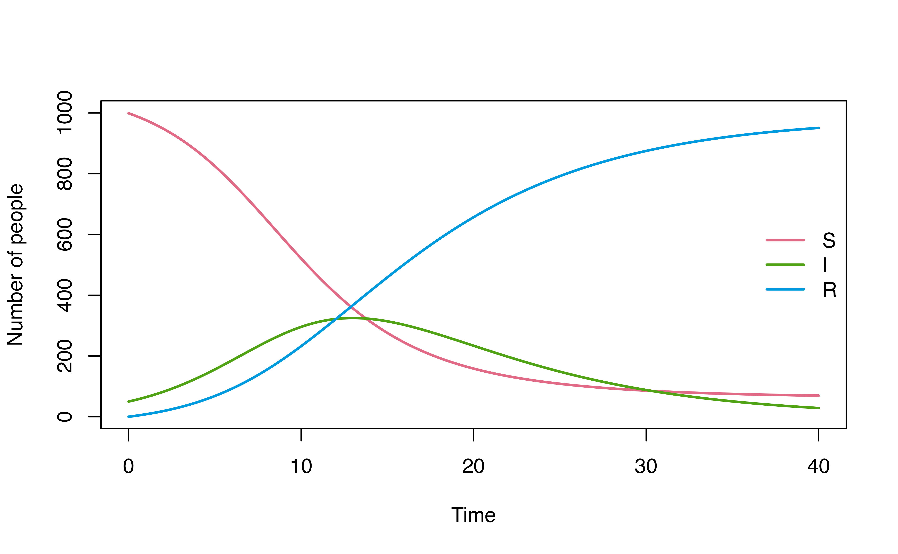
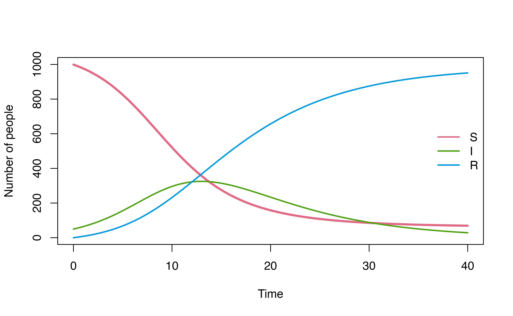
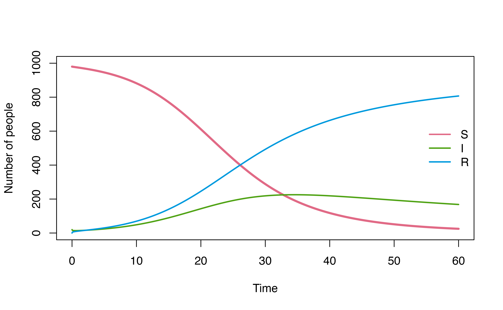
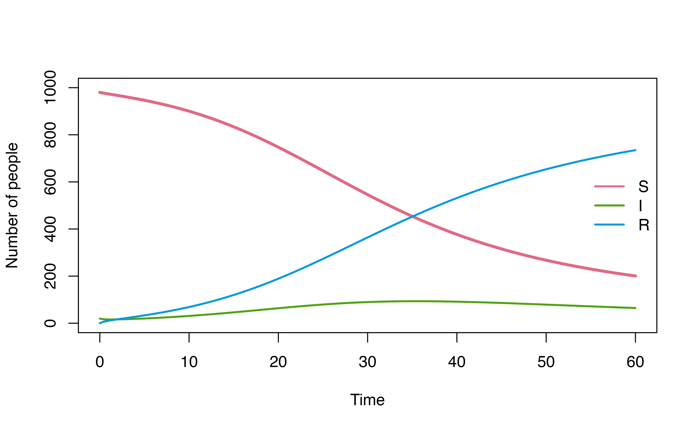

Model definition in denim
In denim, model is defined by a set of transitions between compartments. Each transition is provided in the form of a key-value pair, where:
key show the transition direction between 2 compartments.
value is an expression that describe the transition, it can be a math expression or a built-in dwell-time distribution function.
These key-value pairs can be provided in 2 ways
Using denim domain-specific language (DSL).
Define as a
listin R.
Denim DSL
In denim, each line of code must be a transition. The syntax for defining a transition in denim DSL is as followed:
compartment_A -> compartment_B = transition
Model definition written in denim DSL must be parsed by the function
denim_dsl()
Math expression
For math expression, some basic supported operators include:
+ for addition, - for minus, *
for multiplication, / for division, ^ for
power. Users can also define additional model parameters in the math
expression.
Math expressions in denim are parsed using muparser. For a full list of operators, visit the muparser website at https://beltoforion.de/en/muparser/features.php.
Distribution functions
Several built-in functions are provided to describe transitions based on the distribution of dwell time:
For parametric distributions:
d_lognormal(),d_gamma(),d_weibull(),d_exponential()For non-parametric distributions:
nonparametric()
Each of these functions accepts either fixed numeric values or model parameters as inputs for their distributional parameters. Note that current version of denim does not accept mathematical expression as a distribution’s parameters.
Define a classic SIR model
A classic SIR model can be defined in denim as followed
sir_model <- denim_dsl({
S -> I = beta * (I/N) * S * timeStep
I -> R = d_exponential(rate = gamma)
})Any variable on the right hand side (RHS) of the transitions definition (that are not compartments) will be considered model parameters and their values must be provided later on.
In this example, model parameters are: N,
beta, S, gamma.
timeStep is a special variable in denim that
automatically uses the time step defined in simulation configuration as
it’s value. Note that this special variable can ONLY be used within math
expression.
Users can also choose to provide fixed values as the distributional parameter as followed
sir_model <- denim_dsl({
S -> I = beta*(I/N)*S*timeStep
I -> R = d_exponential(rate = 1/4)
})Similar to R, users can also add comments in denim DSL by starting
the comment with # sign.
sir_model <- denim_dsl({
# this is a comment
S -> I = beta*(I/N)*S*timeStep
I -> R = d_exponential(rate = 1/4) # this is another comment
})Run model
To run the model, users must provide:
Values for model parameters (in this example,
N,beta,Sandgamma).Initial population for the compartments.
Simulation configurations.
Parameters and initial values can be defined as named vectors or named lists in R.
# parameters for the model
parameters <- c(
beta = 0.4,
N = 1000,
gamma = 1/7
)
# initial population for each compartment
initValues <- c(
S = 999,
I = 50,
R = 0
)Simulation configurations are provided as parameters for
sim() function which runs the model, where:
timeStepis the duration of each time step in the model.simulationDurationis the duration to run the simulation.
mod <- sim(sir_model,
parameters = parameters,
initialValues = initValues,
timeStep = 0.01,
simulationDuration = 40)Time varying transition
Aside from timeStep, denim also have another special
variable time for time varying transition (e.g. for
modeling seasonality). Note that this variable can ONLY be used within
math expression.
Example: time varying transition
time_varying_mod <- denim_dsl({
A -> B = 20 * (1+cos(omega * time)) * timeStep
})
# parameters for the model
parameters <- c(
omega = 2*pi/10
)
# initial population for each compartment
initValues <- c(A = 1000, B = 0)
mod <- sim(time_varying_mod,
parameters = parameters,
initialValues = initValues,
timeStep = 0.01,
simulationDuration = 40)
plot(mod, ylim = c(0, 1000))
R list
Users can also define the model structure as a list in R. For example, the SIR model from previous example can be represented as followed.
sir_model_list <- list(
"S -> I" = "beta * (I/N) * S * timeStep",
"I -> R" = d_exponential(rate = "gamma")
)
sir_model_list
#> $`S -> I`
#> [1] "beta * (I/N) * S * timeStep"
#>
#> $`I -> R`
#> Discretized exponential distribution
#> Rate = gammaNote that the transitions (S -> I,
I -> R), mathematical expression
(beta * (I/N) * S * timeStep), and the model parameter
(gamma) must now be provided as strings.
We can then run the model in the same manner as previously demonstrated.
# parameters for the model
parameters <- c(
beta = 0.4,
N = 1000,
gamma = 1/7
)
# initial population for each compartment
initValues <- c(
S = 999,
I = 50,
R = 0
)
# run the simulation
mod <- sim(sir_model_list,
parameters = parameters,
initialValues = initValues,
timeStep = 0.01,
simulationDuration = 40)
# plot output
plot(mod, ylim = c(1, 1000))
When should I define model as a list in R?
While denim DSL offers cleaner and more readable syntax to define model structure, using R list may be more familiar to R users and better suited for integration to a more R-centric workflow.
For example, consider a use case below, where we explore how model
dynamics change under three different I -> R dwell time
distributions (d_gamma, d_weibull,
d_lognormal) using map2.
library(tidyverse)
#> Warning: package 'ggplot2' was built under R version 4.3.1
#> Warning: package 'tidyr' was built under R version 4.3.1
#> Warning: package 'readr' was built under R version 4.3.1
#> Warning: package 'purrr' was built under R version 4.3.3
#> Warning: package 'dplyr' was built under R version 4.3.1
#> Warning: package 'stringr' was built under R version 4.3.1
#> Warning: package 'lubridate' was built under R version 4.3.3
# configurations for 3 different I->R transitions
model_config <- tibble(
IR_dists = c(d_gamma, d_weibull, d_lognormal),
IR_pars = list(c(rate = 0.1, shape = 3), c(scale = 5, shape = 0.3), c(mu = 0.3, sigma = 2))
)
model_config %>%
mutate(
plots = map2(IR_dists, IR_pars, \(dist, par){
transitions <- list(
"S -> I" = "beta * S * (I / N) * timeStep",
# This is not applicable when using denim_dsl()
"I -> R" = do.call(dist, as.list(par))
)
# model settings
denimInitialValues <- c(S = 980, I = 20, R = 0)
parameters <- c(
beta = 0.4,
N = 1000
)
# compare output
mod <- sim(transitions = transitions,
initialValues = denimInitialValues,
parameters = parameters,
simulationDuration = 60,
timeStep = 0.05)
plot(mod, ylim = c(0,1000))
})
) %>%
pull(plots)
#> [[1]]
#> [[1]]$rect
#> [[1]]$rect$w
#> [1] 8.5166
#>
#> [[1]]$rect$h
#> [1] 324.2026
#>
#> [[1]]$rect$left
#> [1] 53.8834
#>
#> [[1]]$rect$top
#> [1] 662.1013
#>
#>
#> [[1]]$text
#> [[1]]$text$x
#> [1] 60.30808 60.30808 60.30808
#>
#> [[1]]$text$y
#> [1] 581.0507 500.0000 418.9493
#>
#>
#>
#> [[2]]
#> [[2]]$rect
#> [[2]]$rect$w
#> [1] 8.5166
#>
#> [[2]]$rect$h
#> [1] 324.2026
#>
#> [[2]]$rect$left
#> [1] 53.8834
#>
#> [[2]]$rect$top
#> [1] 662.1013
#>
#>
#> [[2]]$text
#> [[2]]$text$x
#> [1] 60.30808 60.30808 60.30808
#>
#> [[2]]$text$y
#> [1] 581.0507 500.0000 418.9493
#>
#>
#>
#> [[3]]
#> [[3]]$rect
#> [[3]]$rect$w
#> [1] 8.5166
#>
#> [[3]]$rect$h
#> [1] 324.2026
#>
#> [[3]]$rect$left
#> [1] 53.8834
#>
#> [[3]]$rect$top
#> [1] 662.1013
#>
#>
#> [[3]]$text
#> [[3]]$text$x
#> [1] 60.30808 60.30808 60.30808
#>
#> [[3]]$text$y
#> [1] 581.0507 500.0000 418.9493